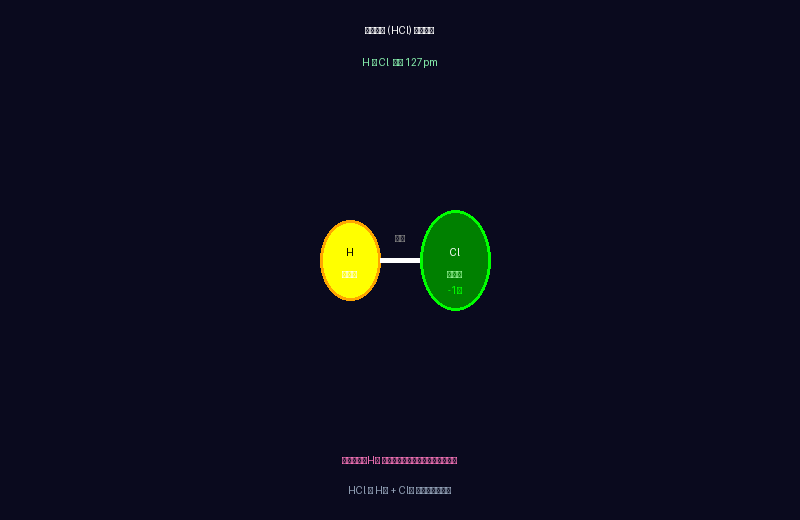
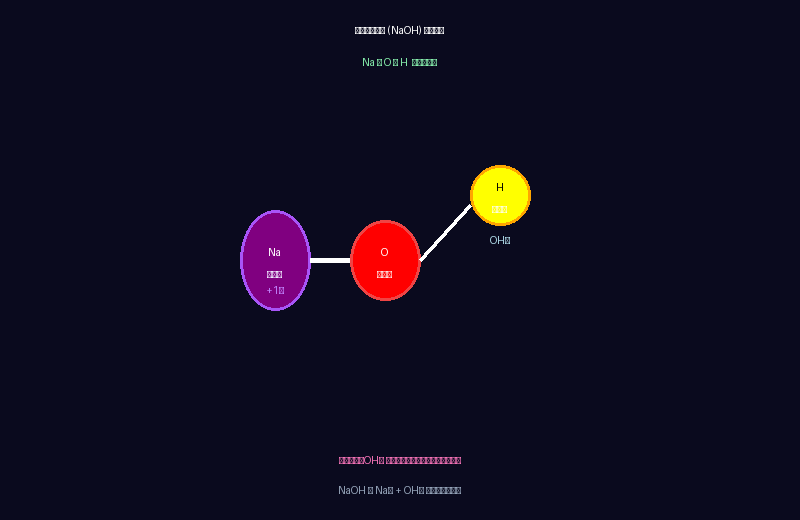
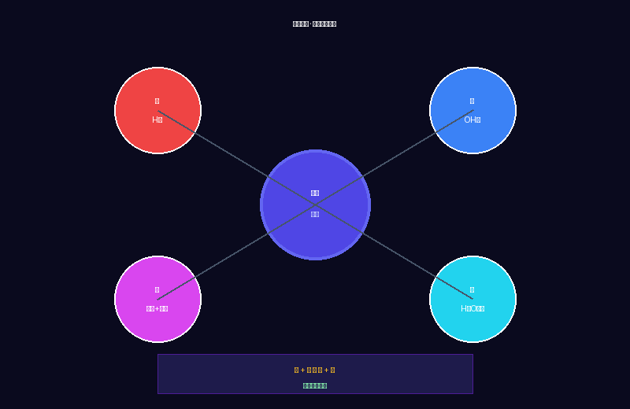
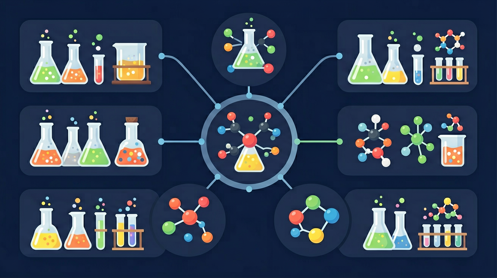

🔬 核心分子结构图




酸和碱相遇会发生什么？




先选一个你关心的问题。后面的例子、提示和 AI 学伴都会围绕这个问题来帮你推进。
选择或输入后，本课会围绕你的问题展开。
你已经知道酸溶液中有H⁺，碱溶液中有OH⁻，还知道如何用石蕊和酚酞判断酸碱性，会用pH试纸测溶液的酸碱度。
如果把酸性溶液和碱性溶液混合在一起，会发生什么？它们会互相"打架"还是"握手言和"？这跟你被蚊子咬了涂肥皂水、吃胃药缓解胃痛都有直接关系！
所以要探究酸碱混合后发生的中和反应——它的微观实质是什么？会生成什么？在生活中怎么用？
回答这些问题，看看你的起点在哪里，不需要全对，了解自己的水平即可。
Q1: 酸性溶液和碱性溶液分别有什么共同离子？
Q2: 下列哪种物质能用来鉴别酸溶液和碱溶液？
下面是一个交互式实验室，先看介绍再动手操作。
💡 操作提示：点击"强酸"、"弱酸"、"强碱"、"弱碱"标签页，选择物质后观察颜色变化。
点击上方按钮查看中和反应的微观过程
酸 + 碱 → 盐 + 水 的化学反应，叫做中和反应。
酸提供的氢离子(H⁺)和碱提供的氢氧根离子(OH⁻)结合生成了水分子(H₂O)，这就是中和反应的微观本质。
将以下实验步骤按正确顺序拖拽排列，体验科学探究的逻辑。
正确顺序（拖入空格）：
可选步骤：
点击左边的反应，再点击右边对应的判断，测试你能否正确识别中和反应！
拖动滑块模拟向碱溶液中逐滴加入酸，观察pH值如何变化。
💡 思考：当pH刚刚好等于7时，意味着什么？这时溶液中的H⁺和OH⁻有什么关系？
仔细思考，答案藏在H⁺ + OH⁻ → H₂O 这个规律里。
纠正：必须是酸+碱生成盐+水，才叫中和。
CuO + 2HCl → CuCl₂ + H₂O 虽生成盐和水，但CuO是氧化物不是碱，不是中和反应。
纠正：只有恰好完全反应时pH才≈7。酸过量时溶液仍呈酸性，碱过量时仍呈碱性。
纠正：中和反应本质是H⁺ + OH⁻ → H₂O，Na⁺和Cl⁻等"旁观离子"没有消失，仍然留在溶液中形成盐。
观看下面的演示视频，直观了解中和反应的实验现象。
📝 视频笔记：中和反应有明显的外观变化（颜色变化、沉淀、气体等），注意观察酚酞、石蕊指示剂的颜色变化。
写出下列中和反应的化学方程式：
① 氢氧化钾 KOH + 盐酸 HCl →
② 氢氧化钙 Ca(OH)₂ + 盐酸 HCl →
某化工厂含硫酸废水（H₂SO₄），如果加入NaOH固体来处理：
① 写出化学方程式
② 怎么判断反应恰好完成？
如果没有pH试纸，你还可以用什么方法设计实验，证明盐酸和氢氧化钠溶液确实发生了中和反应？
尝试写出下面反应的化学方程式（输入框中填写）：
① 硫酸 H₂SO₄ + 氢氧化钾 KOH → ___ + H₂O
② 硝酸 HNO₃ + 氢氧化钙 Ca(OH)₂ → ___ + H₂O
学完概念，现在回来解答开头的问题：
现象：蚊子叮咬时会注入蚁酸（甲酸），让人皮肤发痒。
原理：肥皂水是碱性，涂在皮肤上可以中和蚁酸的酸性，止痒。
现象：胃酸过多会导致胃部不适。
原理：氢氧化铝是碱性药物，能中和多余的胃酸（盐酸）。
现象：工厂排放的废水常呈酸性。
原理：加入熟石灰Ca(OH)₂，中和酸性后再排放。
现象：酸性土壤不利于作物生长。
原理：施加熟石灰可以中和土壤酸性。
用学到的新知识来完成下面的题目。
Q1: 胃酸过多应该吃什么来中和？
Q2: 中和反应的实质是什么？
如果前面的概念还有卡点，回到酸碱指示剂和pH值的课件重新学习。
再看一遍PhET模拟，重点观察酸碱离子是如何结合成水的。
完成课后练习，继续下一节《盐的性质》。
尝试写出更多中和反应的化学方程式。
回答开头的问题：
蚊子叮咬涂肥皂水、胃酸过多吃胃药、工厂废水处理——都是利用了"酸+碱=盐+水"的中和反应。